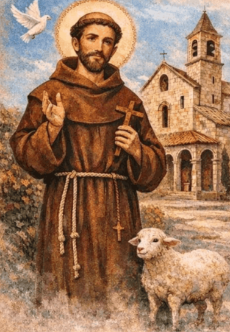
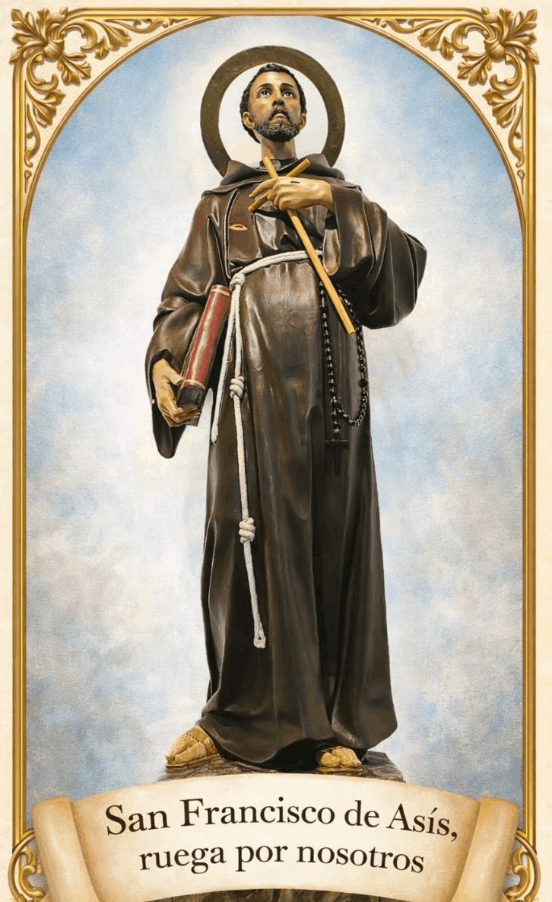

Best AI Website MakerFrancisco nació en Asís (Italia), hacia el año 1182. Su padre, Pedro Bernardone, era un rico comerciante de telas. Su madre se llamaba Pica. En los años de su infancia y adolescencia, no le faltó nada, pues en casa entraba mucho dinero. De joven le gustaba asistir a fiestas y divertirse con sus amigos, sin preocuparse por el porvenir. No mostró ningún interés por los estudios ni tampoco quiso aprender el oficio de su padre para sucederle.
Cuando el joven tenía 20 años, se desató una guerra entre Perusa y Asís. Francisco tomó parte en la campaña militar y le apresaron. Estuvo prisionero en Perusa durante un año. Mientras estaba en la cárcel, pudo reflexionar sobre la vida que estaba llevando, sintiéndose movido a cambiar. En 1203, debido a una enfermedad, fue liberado y volvió a Asís.
Una vez recuperado, volvió a incorporarse al ejército, comprándose una armadura majestuosa y un caballo, y partió para combatir a los enemigos. Por el camino, se le presentó un militar que no tenía con qué comprar su armadura. Francisco se conmovió y le regaló la suya. Esa noche soñó que, a cambio de la armadura militar, el Señor le concedía una armadura espiritual para combatir a los enemigos del alma. De nuevo cae enfermo y no puede combatir, por lo que tiene que volver a Asís.
Francisco vuelve decidido a cambiar de vida. Se va desapegando de la vida mundana y de los ideales caballerescos, procurando la soledad e intensificando su vida de oración. En su espíritu se va despertando un gran deseo de servir y ayudar a los demás. Se cuenta que, un día que paseaba por el campo, vio a un leproso y experimentó una fuerte repugnancia. Pero se sintió movido interiormente por el Señor a vencerse y besar sus llagas. Después de este acto de virtud, el santo se vio impulsado a visitar a los enfermos y a los pobres.

En la segunda mitad del año 1205, estando en oración frente al crucifijo de la iglesia de San Damián, en Asís, oyó la voz del Señor que le repetía tres veces: «Francisco, repara mi Iglesia, que se desmorona». El santo entendió que le pedía reconstruir la pobre capilla en ruinas, así que vendió sus bienes y se marchó a San Damián a vivir como ermitaño para reconstruirla. El Señor, sin embargo, no se refería a esa iglesita sino a su “Iglesia”. Le estaba hablando en el plano sobrenatural. Con su vida, Francisco llevará a cabo también esa otra reconstrucción que el Señor le pedía, simbolizada en aquella construcción material.
Cuando Pedro Bernardone, el padre de Francisco, supo que su hijo había dejado su casa y que había repartido sus bienes entre los pobres, montó en cólera y se presentó al obispo. Ante el prelado, Bernardone desheredó a su hijo y le pidió que le devolviera lo que de él había recibido. Francisco, en ese mismo instante, delante de todos, se despojó de su ropa y se la entregó diciendo: «Hasta hoy he sido hijo de Pedro Bernardone, a partir de hoy podré decir: “Padre nuestro, que estás en el cielo”». Francisco recorría las calles de Asís pidiendo limosna y se dedicaba a la reconstrucción de la iglesia de San Damián, vestido con un hábito pobre y viejo. La gente que le había conocido antes, cuando vestía de forma distinguida y presumía de sus bienes, se burlaba de él.
Poco después, Francisco pidió permiso a los benedictinos para retirarse a una capilla en ruinas que estaba a 4 km. del pueblo, la iglesia de Santa María de los Ángeles, llamada “Porciúncula”. En ella vivió como ermitaño, dedicado a la oración y a la reconstrucción de ambas capillas, San Damián y la Porciúncula.
Un día, a mediados del año 1208, mientras se proclamaba el Evangelio en la Misa, el santo experimentó que el Señor se dirigía directamente a él: «Id a proclamar que está cerca el Reino de los cielos. Curad enfermos, resucitad muertos, purificad leprosos, expulsad demonios. Gratis lo recibisteis; dadlo gratis. No os procuréis oro, ni plata, ni calderilla en vuestras fajas; ni alforja para el camino, ni dos túnicas, ni sandalias, ni bastón; porque el obrero merece su sustento» (Mt. 10, 7-10). Desde entonces, Francisco decidió dedicarse al apostolado viviendo en la más estricta pobreza.
Así comenzó su vida apostólica. Pronto se le unieron otros compañeros. El primero fue Bernardo de Quintavalle, un rico comerciante de Asís, que dejó todo para irse con Francisco a la Porciúncula. Luego llegó Pedro Cattani, que era canónigo de la catedral. Poco a poco se fue formando un grupo, y Francisco les enviaba a misionar de dos en dos.
En 1209, Francisco escribe un proyecto de “forma de vida” para esta comunidad y decide ir a Roma para pedir la aprobación del Papa Inocencio III. En Roma mostraron una cierta reticencia, pues la “forma de vida” era demasiado exigente, pero el pontífice intuyó que era obra de Dios y dio su consenso. Las reglas que Francisco había escrito no eran más que las pautas que el Señor da en el Evangelio, vividas con radicalidad.
A la vuelta de Roma, los frailes se establecieron en Rivotorto, una población vecina a Asís, donde vivieron varios meses. En 1210, la comunidad, cada vez más numerosa, se trasladó a la Porciúncula. En esta época, la joven Clara, que pertenecía a una familia noble, manifestó a Francisco su deseo de consagrarse a Dios con la misma regla que ellos estaban viviendo. Nació así una segunda institución, que se estableció en la iglesia de San Damián.
El celo apostólico de Francisco le empuja a llevar la Palabra de Dios a todos los lugares de la tierra. Los franciscanos se van extendiendo y abren misiones en Europa. Decide viajar a Siria y a Marruecos para abrir también allí nuevas fundaciones.

El primer capítulo general de la orden se celebró en el año 1219, en Asís. Habían pasado solamente diez años desde la aprobación pontificia, pero los franciscanos eran ya más de cinco mil. Francisco les insistía en la unión con Dios, la fidelidad a la Iglesia y al Evangelio, la pobreza y el desprendimiento, como medios necesarios para que su apostolado fuera fecundo.
Francisco obtuvo permiso del Santo Padre para ir a Egipto a entrevistarse con el sultán musulmán para poder predicar también allí el Evangelio. Ante la negativa de los mahometanos, se dirigió a Tierra Santa para visitar los santos lugares de la vida del Señor.
Mientras tanto, en Italia surgieron problemas en la Orden. A petición del santo, el Papa Honorio III nombró al cardenal Hugolino (futuro Papa Gregorio IX), como protector de la misma. Por su parte, Francisco encomendó el gobierno de la Orden a su vicario, fray Pedro Cattani, y se dedicó por completo a la predicación y a la redacción de una regla definitiva. Honorio III aprobó esta regla el 29 de noviembre de 1223.
Al año siguiente, Francisco decide retirarse durante 40 días al Monte Alvernia para meditar la Pasión del Señor. Estando allí, tuvo una visión de un serafín, que le imprimió las marcas de Jesús crucificado en sus manos, pies y costado. Después volvió a Asís, predicando en todos los pueblos por los que pasaba.
La salud del santo se va deteriorando y tiene que someterse a varias curas y tratamientos en distintas ciudades de la zona. Finalmente, fue trasladado al palacio episcopal de Asís en abril de 1226, sin muchas esperanzas de curación.
El santo, cuando ya sentía cercana la muerte, pidió que le llevasen a la Porciúncula. La tarde del 3 de octubre, después de dar la bendición a sus hermanos, pidió ser depositado sobre el suelo para morir de la manera más pobre. Al día siguiente, llevaron su cuerpo a Asís para sepultarlo. Pasaron antes por San Damián para que Clara y las hermanas pudieran darle el último adiós.
Tan solo dos años después de su muerte, el 16 de julio de 1228, el Papa Gregorio IX, que había sido protector de la Orden cuando era cardenal, canonizó a San Francisco en Asís.
San Francisco de Asís tenía un amor muy grande al Sacramento de la Eucaristía. Tomás de Celano, su primer biógrafo, hace constantes referencias a esta devoción. Transcribimos aquí algunos de los detalles que nos transmite:
«Ardía en fervor, que le penetraba hasta la médula, para con el sacramento del cuerpo del Señor, admirando locamente su preciosa condescendencia y su condescendiente caridad. Juzgaba notable desprecio no oír cada día, a lo menos, una misa, pudiendo oírla. Comulgaba con frecuencia y con devoción tal, como para infundirla también a los demás. Como tenía en gran reverencia lo que es digno de toda reverencia, ofrecía el sacrificio de todos los miembros, y al recibir al Cordero inmolado inmolaba también el alma en el fuego que le ardía de continuo en el altar del corazón. Quiso a veces enviar por el mundo hermanos que llevasen copones preciosos, con el fin de que allí donde vieran que estaba colocado con indecencia lo que es el precio de la redención, lo reservaran en el lugar más escogido. Quería que se tuviera en mucha veneración las manos del sacerdote, a las cuales se ha concedido el poder tan divino de realizarlo. Decía con frecuencia: «Si me sucediere encontrarme al mismo tiempo con algún santo que viene del cielo y con un sacerdote pobrecillo, me adelantaría a presentar mis respetos al presbítero y correría a besarle las manos, y diría: “¡Oye, San Lorenzo, espera, porque las manos de éste tocan al Verbo de la vida y poseen algo que está por encima de lo humano”» (Tomás de Celano, “Vida segunda de San Francisco”).
Pasaba largas horas en adoración del Santísimo, estremecido por la presencia divina. En sus escritos se lee esta exclamación:
«¡Tiemble el hombre todo entero, estremézcase el mundo todo y exulte el cielo cuando Cristo, el Hijo de Dios vivo, se encuentra sobre el altar en manos del sacerdote! ¡Oh celsitud admirable y condescendencia asombrosa! ¡Oh sublime humildad, oh humilde sublimidad: que el Señor del mundo universo, Dios e Hijo de Dios, se humilla hasta el punto de esconderse, para nuestra salvación, bajo una pequeña forma de pan!».
En la vida y en los escritos de San Francisco de Asís, queda constancia de su devoción mariana. Tenía predilección por los lugares marianos, en especial por la iglesia de Santa María de los Ángeles (llamada “Porciúncula”), que fue una de las que reconstruyó. Cuenta Tomás de Celano, su biógrafo: «Solía decir que por revelación de Dios sabía que la Virgen santísima amaba con especial amor aquella iglesia entre todas las construidas en su honor a lo ancho del mundo, y por eso el santo la amaba más que a todas» (Tomás de Celano, “Vida segunda de San Francisco”) De hecho, quiso que sus hermanos se trasladasen allí «con el fin de que allí donde, por los méritos de la Madre de Dios, había tenido su origen la orden de los menores, recibiera también -con su auxilio- un renovado incremento» (San Buenaventura, “Vida de San Francisco de Asís”).
Su devoción se alimentaba de gestos concretos. San Francisco rezaba el oficio “parvo” de la Virgen María. Celano dice que «le tributaba peculiarmente alabanzas, le multiplicaba oraciones, le ofrecía afectos, tantos y tales como no puede expresar lengua humana» (Tomás de Celano, “Vida segunda de San Francisco”). Para celebrar las fiestas de la Virgen, se preparaba durante días con ayunos y penitencias.
Se conservan dos famosas oraciones de San Francisco a la Virgen:
Saludo a la bienaventurada Virgen María
«Salve, Señora, santa Reina, santa Madre de Dios, María, que eres virgen hecha Iglesia, y elegida por el santísimo Padre del cielo, que te consagró con su santísimo Hijo amado y el Espíritu Santo Paráclito, en quien estuvo y está toda la plenitud de la gracia y todo bien.
Salve, palacio suyo; salve, tabernáculo suyo; salve, casa suya. Salve, vestidura suya; salve, esclava suya; salve, Madre suya; y, salve, todas vosotras las santas virtudes, que por la gracia e iluminación del Espíritu Santo sois infundidas en los corazones de los fieles, para hacerlos, de infieles, fieles a Dios».
Antífona del Oficio de la Pasión«Santa Virgen María, no ha nacido en el mundo ninguna semejante a ti entre las mujeres, hija y esclava del altísimo y sumo Rey, el Padre celestial, Madre de nuestro santísimo Señor Jesucristo, esposa del Espíritu Santo: ruega por nosotros... ante tu santísimo amado Hijo, Señor y maestro».
Best AI Website Maker